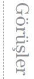

Son Ada’yı büyük bir zevkle okudum. Mutlak bir başarı.
Louis de Berniéres, Yüzbaşı Corelli’nin Mandolini’nin yazarı
Livaneli’nin bu benzersiz yaratıcı romanında, insan yapısı otoriteyle karşı karşıya... Yazar bizi dünyamız üzerinde yenidendüşünmeye çağırıyor. Mutlaka okunmalı.
Prof. Lenore Martin, Harvard Üniversitesi
Son Ada’yı dinsel ya da seküler bir çeşit faşizmin Türkiye’yi ya da bir ülkeyi ele geçirip bitirişinin öyküsü olarak da okuyabilirsiniz.
Haluk Şahin, Radikal
Son Ada, özellikle genç kızların severek okuyacakları bir roman.
Asuman Kafaoğlu, Radikal Kitap
İçinizde bir keşfetme duygusunun yeşerdiğini hissediyorsunuz... Livaneli, mizahı elden bırakmadan düşünmeye davet ediyor herkesi.
Bülent Usta, Milliyet Kitap
Peki biz bütün bunların gerçeğini göz göre göre nasıl yaşadık yıllarca? İşte kucağınızda kocaman bir taş gibi bu soruyla baş başa kalıyorsunuz kitabın kapağını kapatınca.
İhsan Yılmaz, Hürriyet
Romanı bitirdiğinizde, bir yurdu yok eden kişilerin, küçük bir adayı da kolaylıkla yok etmesinin doğal olduğunu anlıyorsunuz.
Hasan Akarsu, Cumhuriyet